2D data
Explore one tissue section: colour it by type, niche or gene, plot groups and select regions.
On this page6
The tabs on the left choose what the colours show; the toolbar above holds the tools that work in every tab.
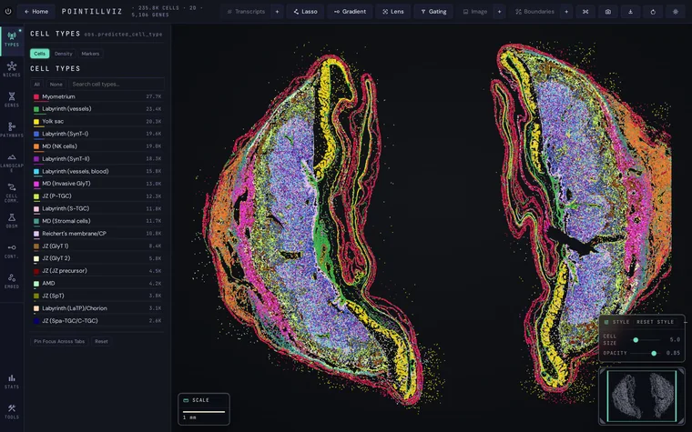
Move, fit and rotate
Drag to move and scroll to zoom. Fit shows the whole section again; Rotate turns it by 90°, Shift-click back.
Hover a cell
The tooltip gives the cell's number, type, position and painted value.
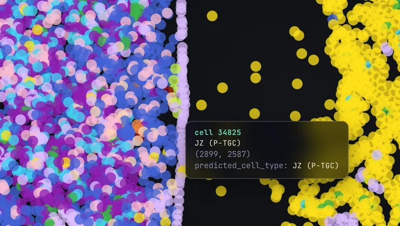
Style and theme
The Style card sets the size and opacity of the cells. T switches between the dark and the light theme.
Layers
Transcripts, Image and Boundaries draw molecules, tissue images and cell outlines over the cells; the + beside each adds one. See Transcripts, Images and Polygons.
Capture and export
The camera keeps the view in the export folder, and the folder button saves views and results as one file. See Export Results and Design Figures.
Each of these tabs paints the cells its own way. A tab appears only when the import mapped its data.
Types
Click a legend row to hide or show a cell type, its colour square to recolour it and its pencil to rename it. With a hierarchy, Color by picks the level and the tick boxes show or hide a branch. Density paints how densely the shown types lie.
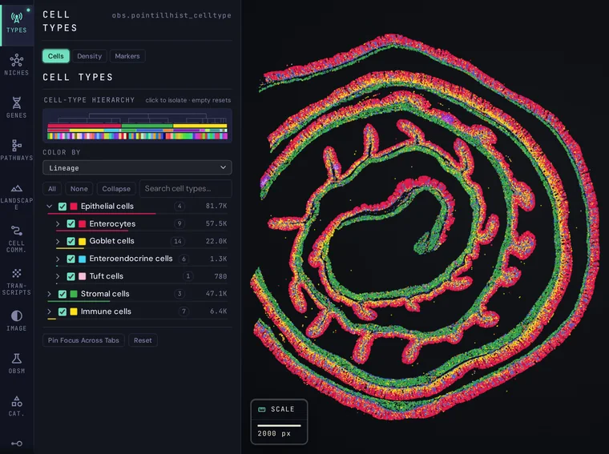
Niches
The same legend for niches. Resolution switches between the niche levels of the import.
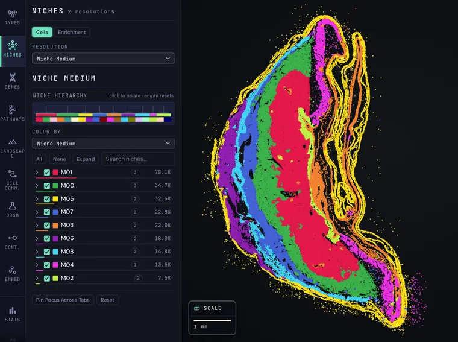
Genes
Search a gene and click it. Raw paints each cell's value, Density a smoothed map, and Multi-RGB three genes at once, one per colour channel. Values switches between counts, log1p(counts) and log1p(CP10K).
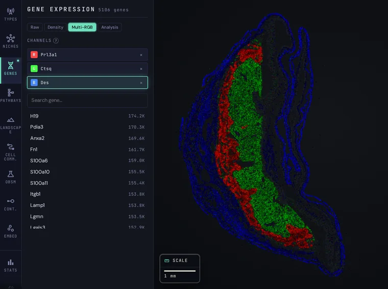
Obsm
Paints one channel of a per-cell matrix, such as protein intensities: pick the matrix, then the channel.
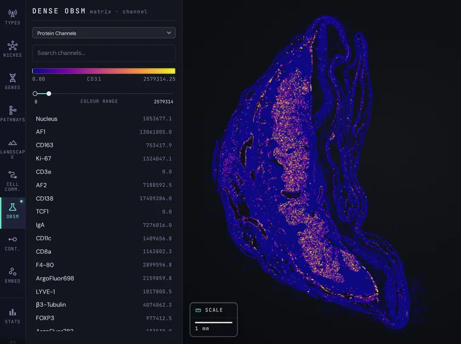
Cont.
Paints a numeric column, such as transcript counts, or a gene through Value from. The ridgeline plot shows the values of each group; click a ridge to focus that group.
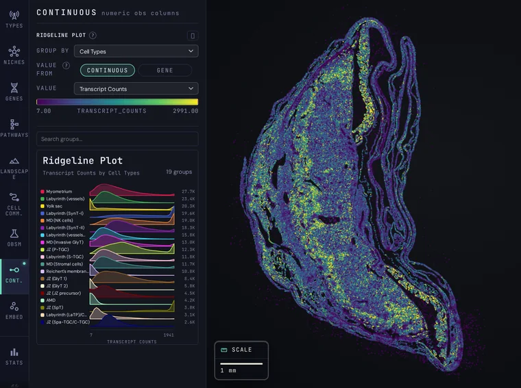
Cat. paints the other categories of the import with the same legend. Pathways and Cell Comm. paint gene-set scores and ligand–receptor pairs; see Pathways and Cell communication.
Keep cells in focus across tabs
In Types or Niches, press None, then show the groups to keep.
Press Pin Focus Across Tabs.
The other cells fade in every tab; Style sets how far.
Press × Clear focus in the header to end it.
Markers
In Types › Markers, add genes with the search field or Top markers. A dot's size is the share of cells that express the gene, its colour the mean expression. View › Radar profiles draws one profile per type instead.
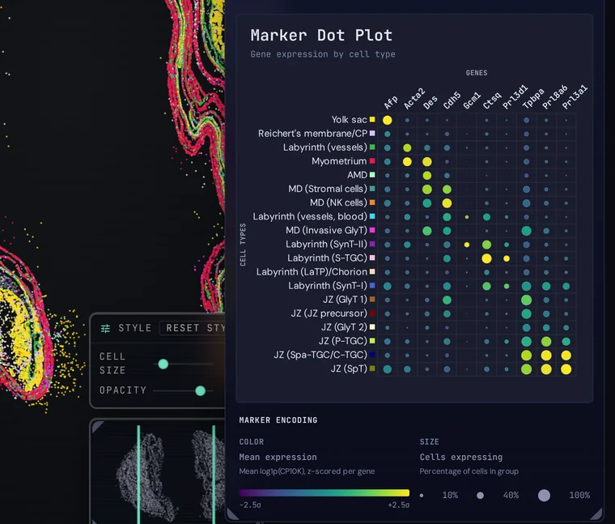
Niche enrichment
Niches › Enrichment compares each niche with the whole dataset: warm squares mark cell types the niche holds more of, blue squares fewer.
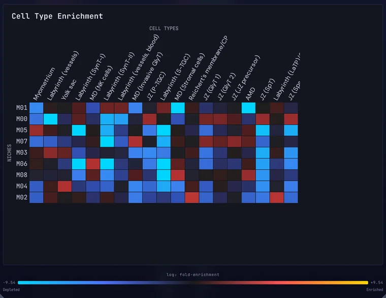
Violin
In Genes, pick a gene and press Open Violin Plot: one violin per cell type or niche, on the scale of the colour bar.
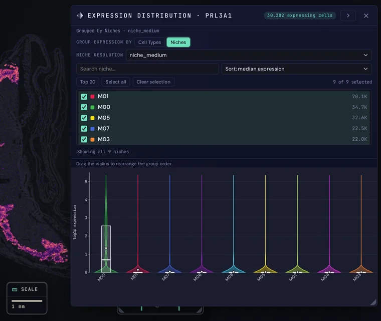
Differential expression
In Genes › Analysis › Differential Analysis, choose a category and two groups, then press Run differential expression. The ◉ of a gene paints it on the tissue.
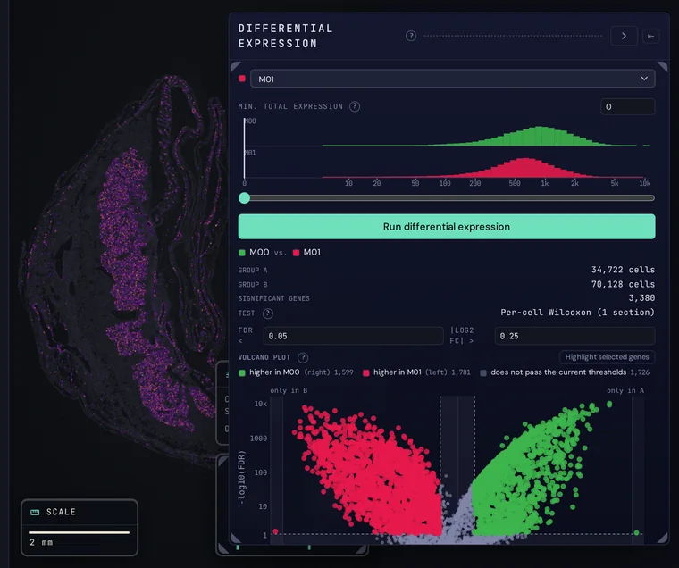
Spatial patterns
In Genes › Analysis › Spatial Analysis, press Calculate spatial gene patterns to rank genes by how strongly they cluster in space. Click a gene: Annotation match names the annotation its hotspot fits best, and Similar spatial genes lists genes with hotspots in the same place.
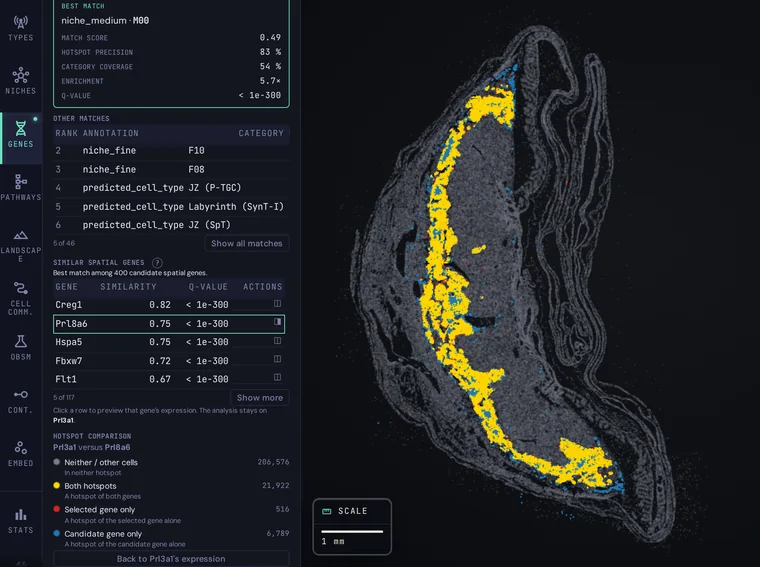
Stats
Stats counts the cells of each type, links two annotations in an alluvial plot (Categorical relationship, then Compute) and shows which types neighbour each other (Colocalization matrix).
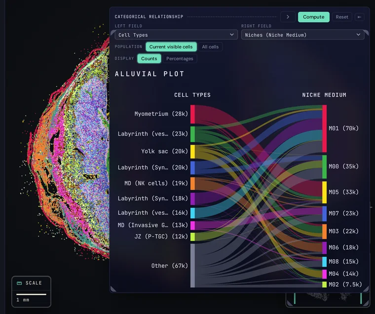
Landscape
Landscape raises each cell by a gene's expression, coloured by an annotation. Drag to tilt; Smooth Landscape draws a surface instead of columns.
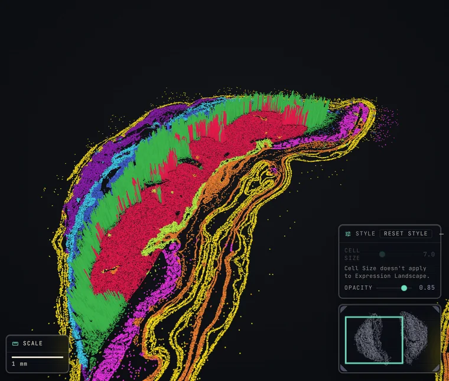
Embed
In Embed, Show on UMAP lays the cells out on the embedding in the current colours. A lasso drawn there selects the same cells on the tissue.
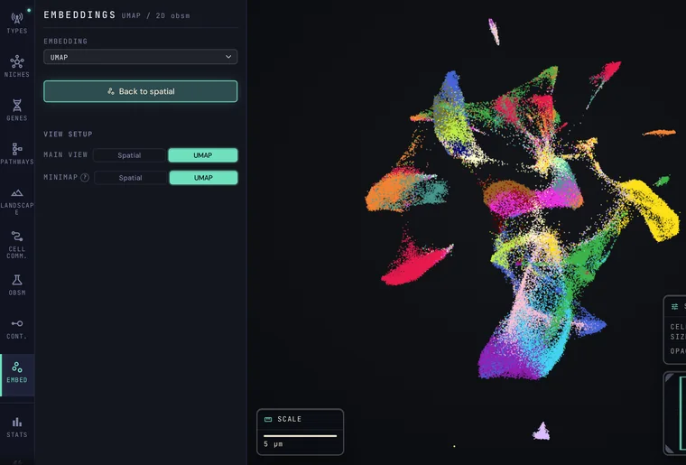
Lasso
Press Lasso (P) and draw around the cells.
Its menu also offers a rectangle and a circle.
Read the Region panel.
The cell count, the share and enrichment of each cell type, and the top genes.
Press Draw region B to compare, draw B, then press Compare regions.
The comparison covers cell types, niches, genes, Obsm and continuous values.
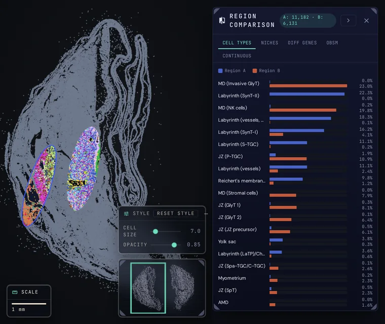
Gradient
Press Gradient (G) and drag a line across the tissue.
Curve and Polygon draw a path or an outline instead.
Pick a Feature.
Its mean and its share of expressing cells are drawn along the line.
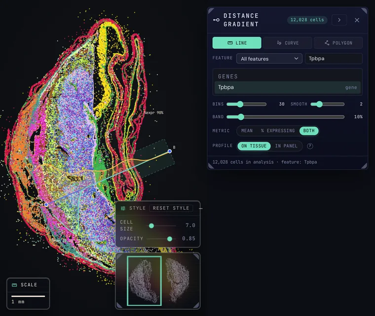
Lens
Press Lens (L).
It counts the cells in view and their types while you pan and zoom.
Turn on Loupe or Callouts.
The loupe reads a circle under the pointer; callouts label the types enriched in view.
Press Freeze to send the cells in view to the Region panel.
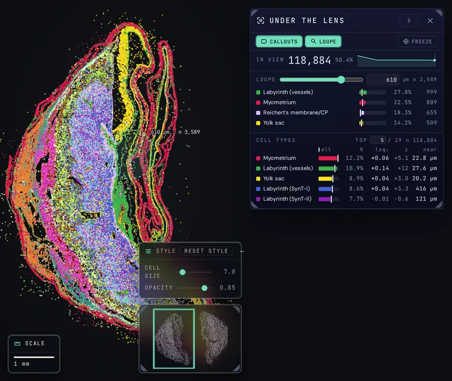
Gating
Press Gating and pick X and Y.
Genes, numeric columns or matrix channels, each with a transform.
Draw a Rect, Quad or Poly gate on the density plot.
The line below gives the cells in the gate and the type they are most about.
Keep Tissue on to fade the cells outside the gate.
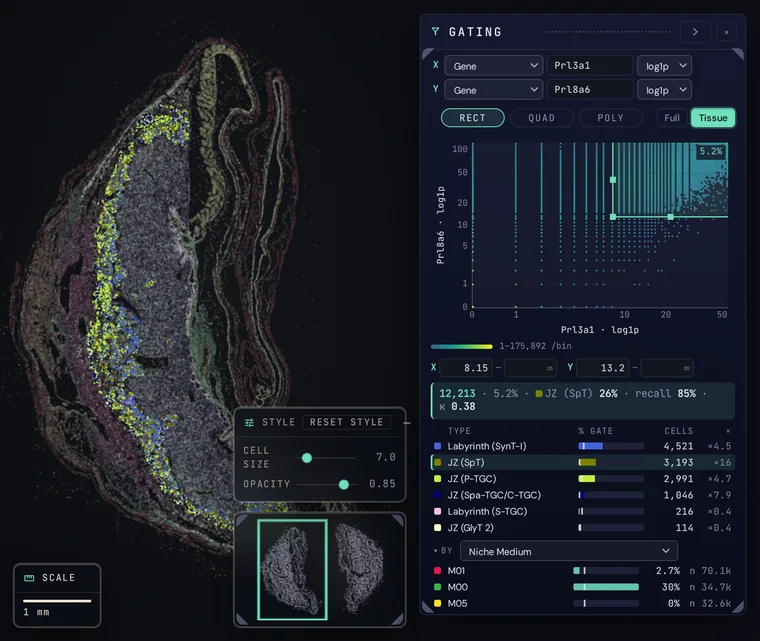
Tools lists every analysis for the dataset, grouped by question; a card opens its tool. Below, Community tools lists the installed tools and those of the Tool Store; a tool with a result per cell offers Paint the map.
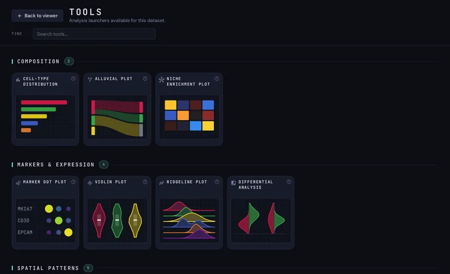
Does Prl3a1 mark the junctional zone? Pick a way to look.
Paint it
- Genes
- Prl3a1
- Niches
- None
- M00
The bright band and niche M00 lie on top of each other.
Count it per niche
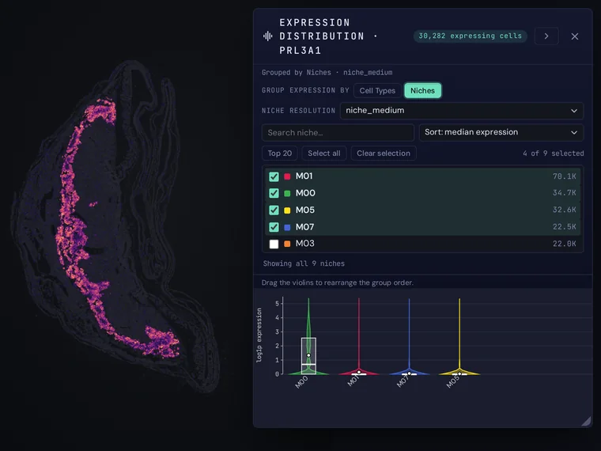
- Genes
- Prl3a1
- Open Violin Plot
- Niches
Only M00 rises above zero; the other niches stay flat.
Profile the niche
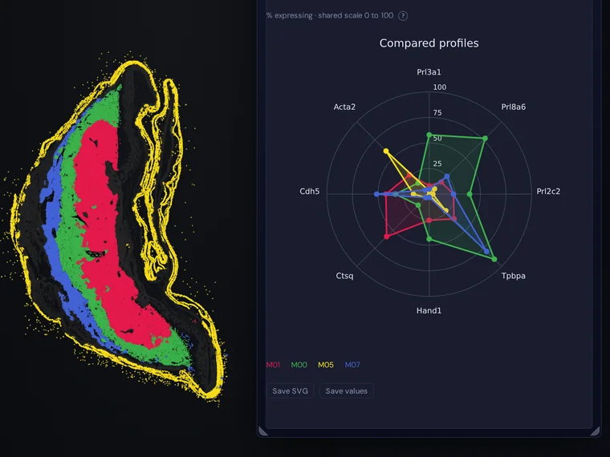
- Types
- Markers
- eight genes
- Group by: Niches
- View: Radar profiles
M00 leads on Prl3a1 and Prl8a6; Tpbpa is high in M07 as well.
Raise it
- Landscape
- Color by: Niche Medium
- Height by: Prl3a1
The green columns of M00 stand tallest; most of the tissue stays flat.
Mix three genes
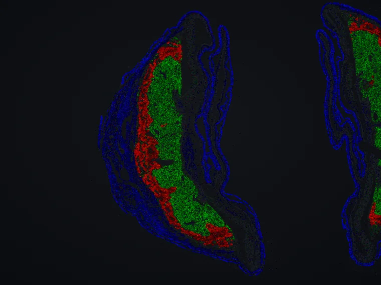
- Genes
- Multi-RGB
- R: Prl3a1
- G: Ctsq
- B: Des
Prl3a1 (red) runs between the labyrinth (green) and the outer layers (blue), where the junctional zone lies.
Gate it
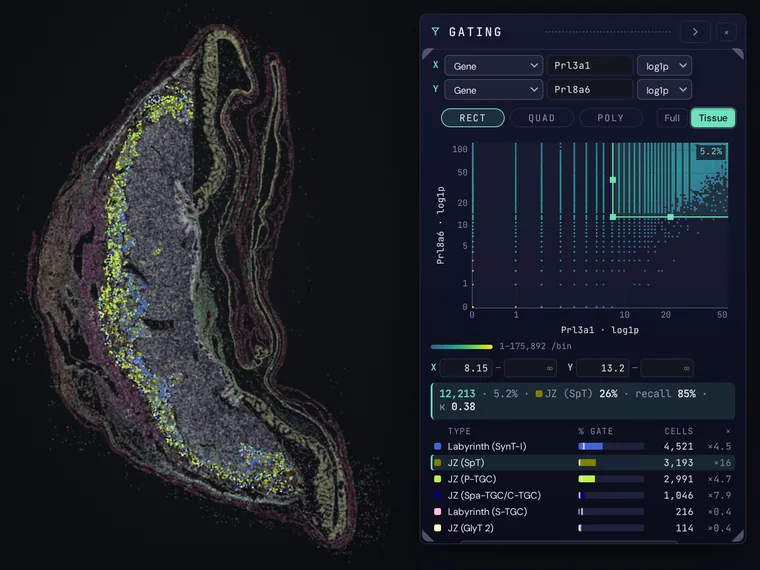
- Gating
- X: Prl3a1
- Y: Prl8a6
- RECT
Junctional-zone types are the most enriched in the gate, and its cells trace the band.
Lasso it
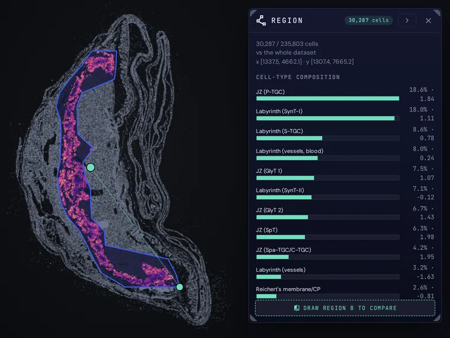
- Genes
- Prl3a1
- Lasso
- around the band
Junctional-zone types are the most enriched inside the outline.
Rank it
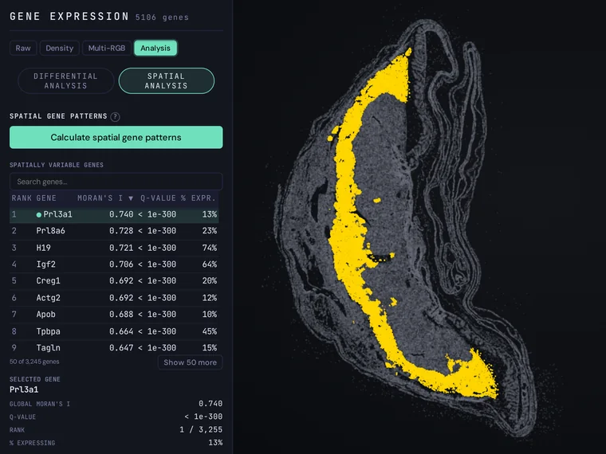
- Genes
- Analysis
- Spatial Analysis
- Calculate spatial gene patterns
- Best match
Prl3a1 ranks first, and its hotspot best matches M00, in yellow.